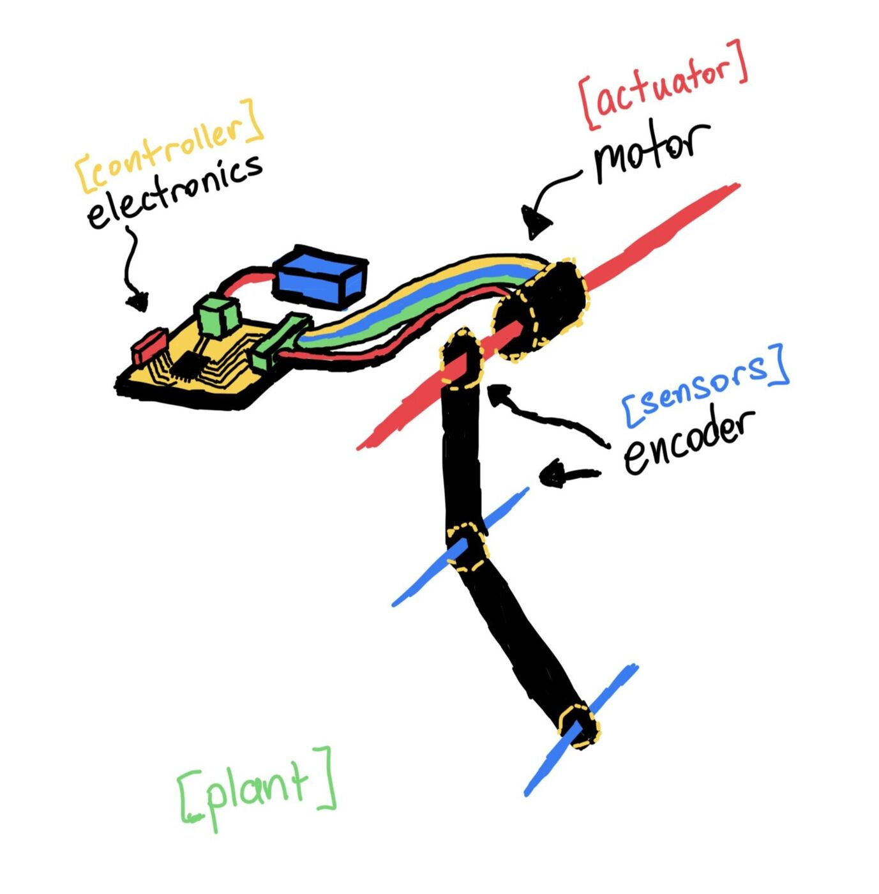
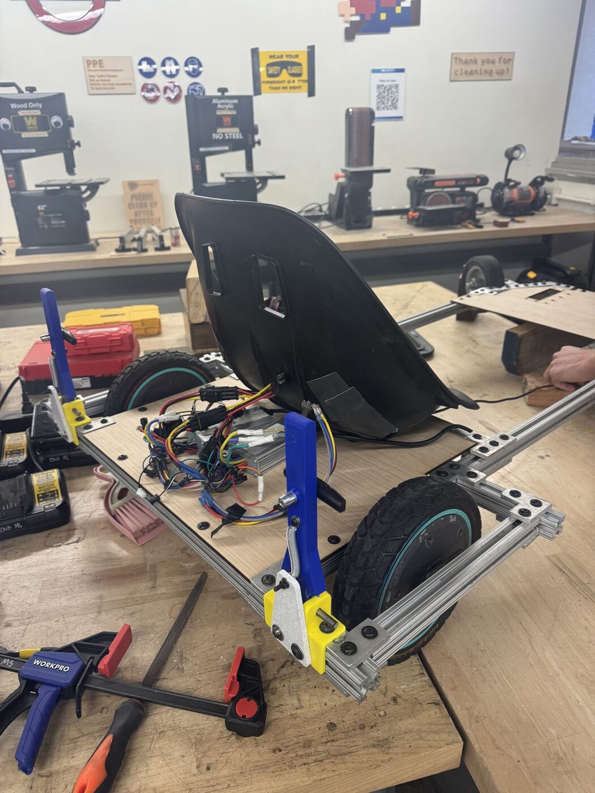

Index of work
Projects
14 builds, from converter boards to robot arms. Filter by discipline, then open any project for the full write-up.
14 of 14 shown

Underactuated Pendubot
Two links, one motor. Balancing the free link through the dynamics of the driven one.
Nonlinear MPC for a DC microgrid
Holding a shared DC bus steady through constant-power load steps with four boost converters.
eCVT actuator testbench
A hardware-in-the-loop rig that finds shifter failures on the bench instead of on race day.
SIGNET robotic arm
A 6-DOF arm that mirrors my arm and a vision model that reads ASL.
Baja controls and DAQ board
One board to log what the car is doing, timestamped and synchronized.
Buck–boost power stage study
Smaller, lower-power 3.3 V rail from a single Li-ion cell, and a plan to prove it.
Heater and thermistor control PCB
A Raspberry Pi HAT that drives three heaters and reads three thermistors.
LUMOS
A 48-LED display with an ESP32, two LED drivers and a printed enclosure.
Supermileage driver UI board
The driver's control panel and a node on the car's CAN bus.
Brewbird flow sensing
Accurate water volume for a brewing machine with a pulse-output flow sensor.
Verstappenmobiel electric go-kart
A 36 V, two-motor kart with Ackermann steering and an F1-style wheel.
Project GreenGlide
Sensors and embedded feedback to make shared e-scooters safer.
Feedback control of a constant power load
Linearize, design, then see what the nonlinear plant does to your controller.